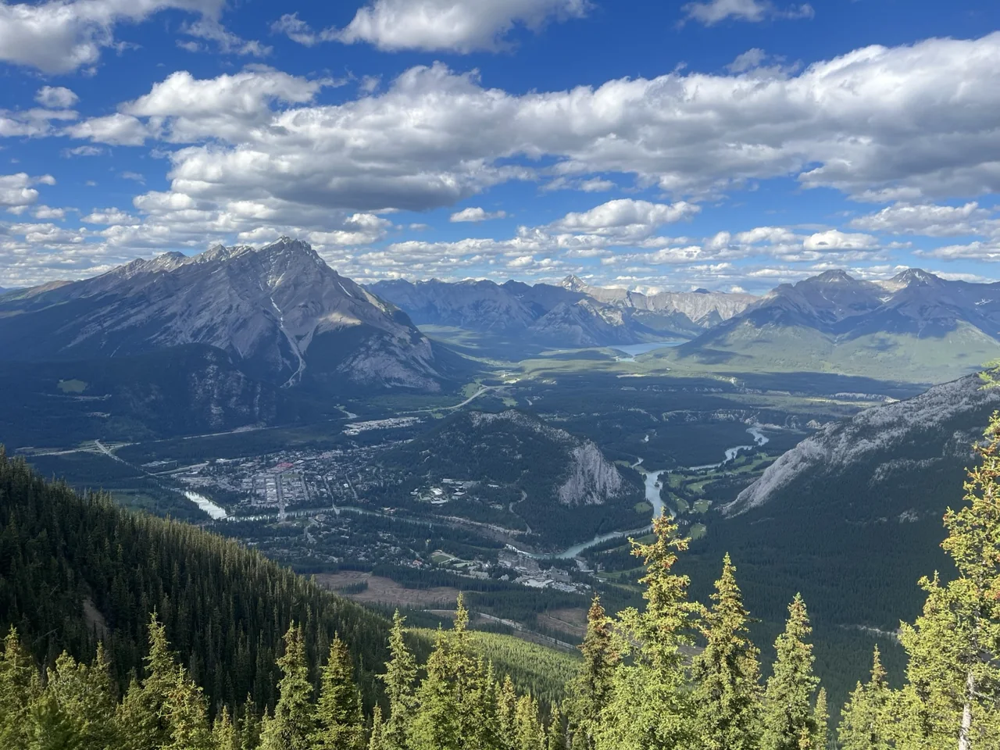
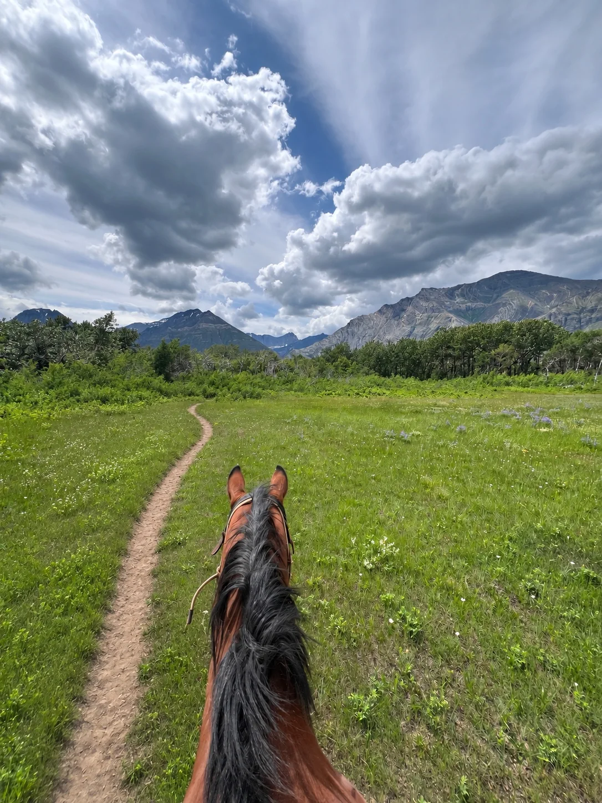
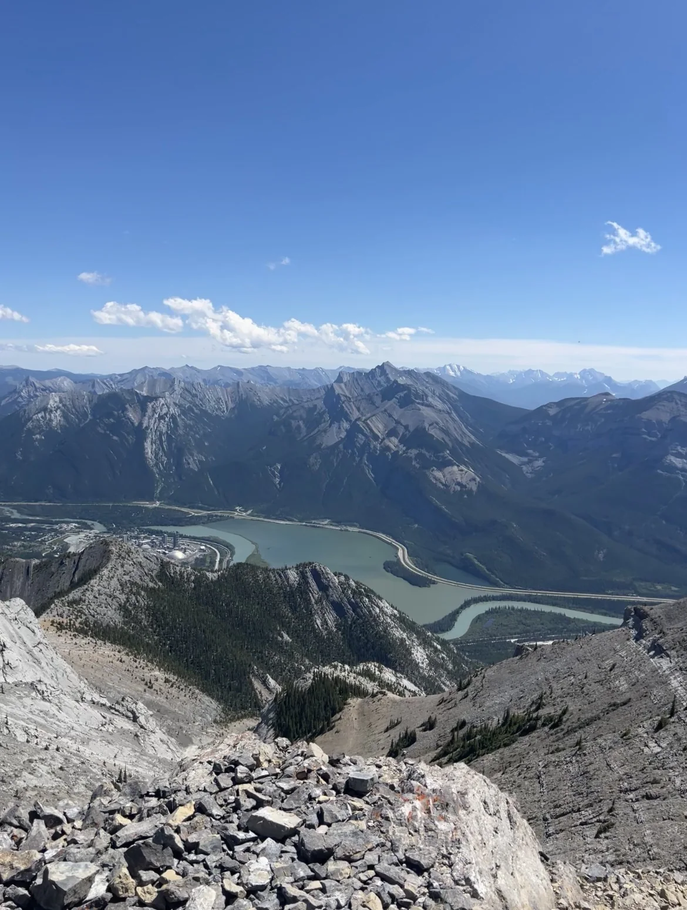
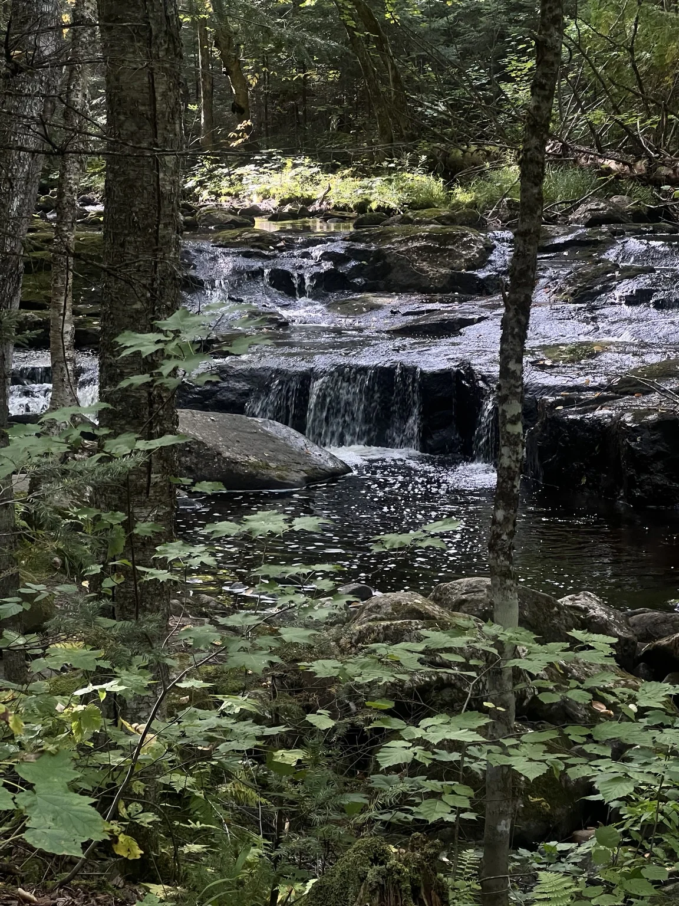
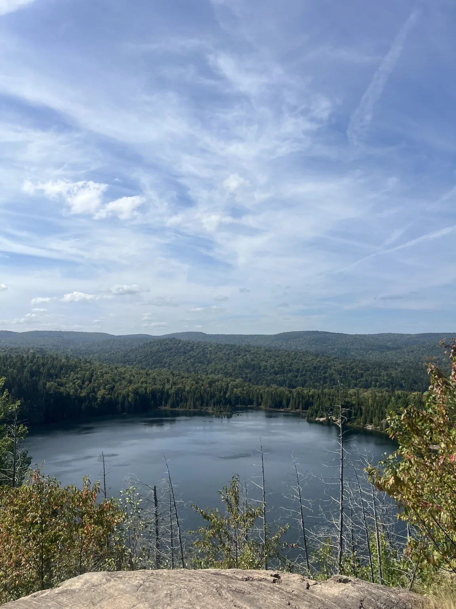
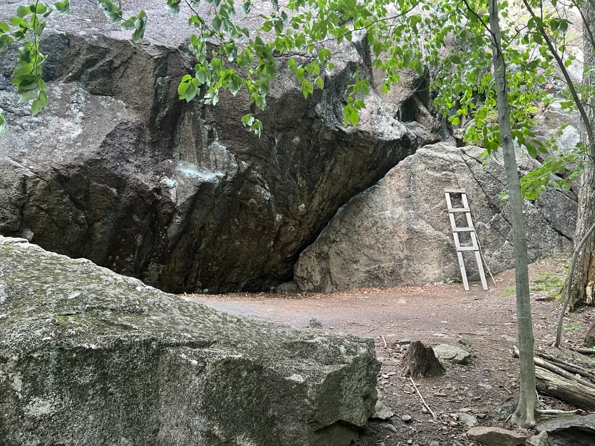

OUTSIDE
Adventures
Climbing, hiking, and plans for bigger mountains.
PHOTOS
Alberta, Canada
Select a photo for a closer look.










QUÉBEC
Val-David


Hiking & backpacking
Trail outings and longer trips.
Mountaineering
A longer-term goal.
I’ll add trip notes here as I write them.
Read the journal